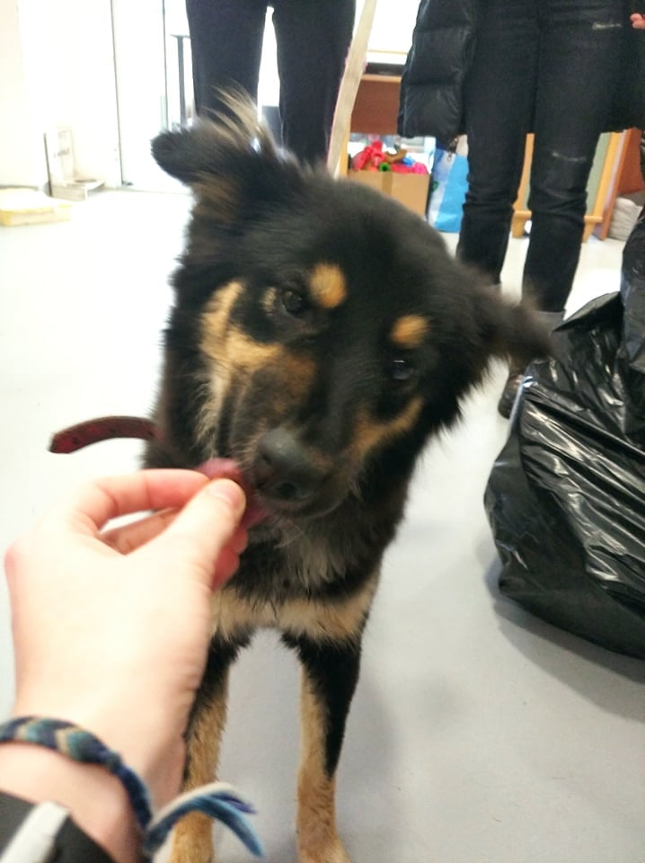

- Nazwa: Kometa
- W typie rasy: Mieszaniec
- Wiek: NW
- Płeć: Samica
- Waga: 8kg
- Nr: 0033/21/T
- Status: Do adopcji
- Przyjęty: 2021-06-05
- Znaleziony: Warszawa
Kometa psiak zabezpieczony na ul. Bocznej w Warszawie. Czyja zguba? Właściciel proszony o kontakt: 41-361-67-24 (8:00-16:00)
Informujemy, że każdego zwierzaka można objąć wirtualną adopcją.
Jeśli jest Pan/Pani zainteresowany/a adopcją tego psa, prosimy o kliknięcie przycisku ADOPTUJ, znajdującego się poniżej oraz wiadomość z odpowiedziami na poniższą ankietę:
0. Imię psa jeśli wybrane
1. Gdzie będzie mieszkał pies? w domu? w bloku? na podwórku? gdzie będzie spał?
2. Jaki jest Państwa stosunek do kastracji zwierząt?
3. Czy są w domu jakieś zwierzęta? jakie? Czy są wykastrowane?
4. Czy były wcześniej w domu zwierzęta? Co się z nimi stało?
5. Czym będzie karmiony pies? (sucha/mokra karma/inne – jakie?) prosimy podać markę karmy!
6. Co z pieskiem w przypadku wyjazdu na wakacje?
7. Czy są w domu dzieci? W jakim wieku?
8. Gdzie będziecie Państwo chodzili z psem do weterynarza?
9. Czy wszyscy domownicy się zgadzają na nowego członka rodziny?
10. Czy nikt nie ma alergii?
11. Czy są Państwo gotowi na wydatki wiążące się ze szczepieniami/odrobaczeniami, leczeniem?
12. Czy zdają sobie Państwo sprawę, że zwierzę będzie na początku załatwiało się w domu? 13. Czy są Państwo świadomi, że zwierzę może niszczyć różne rzeczy w domu?
14. Czy znają Państwo termin – „lęk separacyjny”?
15. Czy są Państwo świadomi, że zwierzę ze schroniska mimo odrobaczeń i kontroli lekarskich może mieć pasożyty i może wystąpić konieczność dalszego leczenia oraz odrobaczania?
16. Czy są Państwo gotowi na wydatki związane z wyprawką dla psa?
17. Czy są Państwo w stanie kupić wskazaną przez schronisko karmę?
18. Punkt dotyczy szczeniąt – czy są Państwo świadomi, że szczenię ze schroniska może być chore na parwowirozę(wysoce śmiertelna choroba zakaźna, początkowo może być bezobjawowa)? Informujemy, że wypełnienie ankiety nie jest jednoznaczne z rezerwacją zwierzęcia. Chęć rezerwacji można wyrazić po pozytywnie wypełnionej ankiecie – trzeba poprosić o dokonanie rezerwacji, jeśli ktoś jest zdecydowany w 100% na zabranie zwierzęcia.
Informujemy, że każdego zwierzaka można objąć wirtualną adopcją.
Jeśli jest Pan/Pani zainteresowany/a adopcją tego psa, prosimy o kliknięcie przycisku ADOPTUJ, znajdującego się poniżej oraz wiadomość z odpowiedziami na poniższą ankietę:
0. Imię psa jeśli wybrane
1. Gdzie będzie mieszkał pies? w domu? w bloku? na podwórku? gdzie będzie spał?
2. Jaki jest Państwa stosunek do kastracji zwierząt?
3. Czy są w domu jakieś zwierzęta? jakie? Czy są wykastrowane?
4. Czy były wcześniej w domu zwierzęta? Co się z nimi stało?
5. Czym będzie karmiony pies? (sucha/mokra karma/inne – jakie?) prosimy podać markę karmy!
6. Co z pieskiem w przypadku wyjazdu na wakacje?
7. Czy są w domu dzieci? W jakim wieku?
8. Gdzie będziecie Państwo chodzili z psem do weterynarza?
9. Czy wszyscy domownicy się zgadzają na nowego członka rodziny?
10. Czy nikt nie ma alergii?
11. Czy są Państwo gotowi na wydatki wiążące się ze szczepieniami/odrobaczeniami, leczeniem?
12. Czy zdają sobie Państwo sprawę, że zwierzę będzie na początku załatwiało się w domu? 13. Czy są Państwo świadomi, że zwierzę może niszczyć różne rzeczy w domu?
14. Czy znają Państwo termin – „lęk separacyjny”?
15. Czy są Państwo świadomi, że zwierzę ze schroniska mimo odrobaczeń i kontroli lekarskich może mieć pasożyty i może wystąpić konieczność dalszego leczenia oraz odrobaczania?
16. Czy są Państwo gotowi na wydatki związane z wyprawką dla psa?
17. Czy są Państwo w stanie kupić wskazaną przez schronisko karmę?
18. Punkt dotyczy szczeniąt – czy są Państwo świadomi, że szczenię ze schroniska może być chore na parwowirozę(wysoce śmiertelna choroba zakaźna, początkowo może być bezobjawowa)? Informujemy, że wypełnienie ankiety nie jest jednoznaczne z rezerwacją zwierzęcia. Chęć rezerwacji można wyrazić po pozytywnie wypełnionej ankiecie – trzeba poprosić o dokonanie rezerwacji, jeśli ktoś jest zdecydowany w 100% na zabranie zwierzęcia.